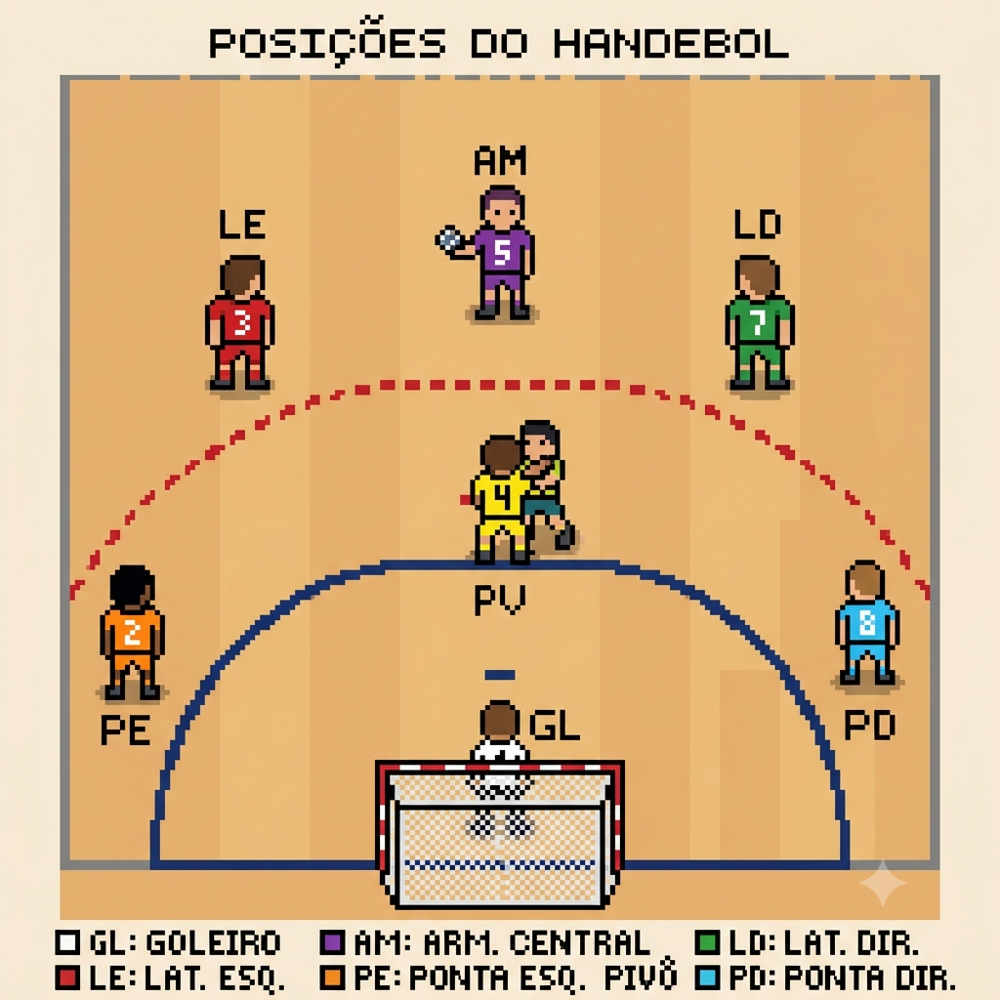
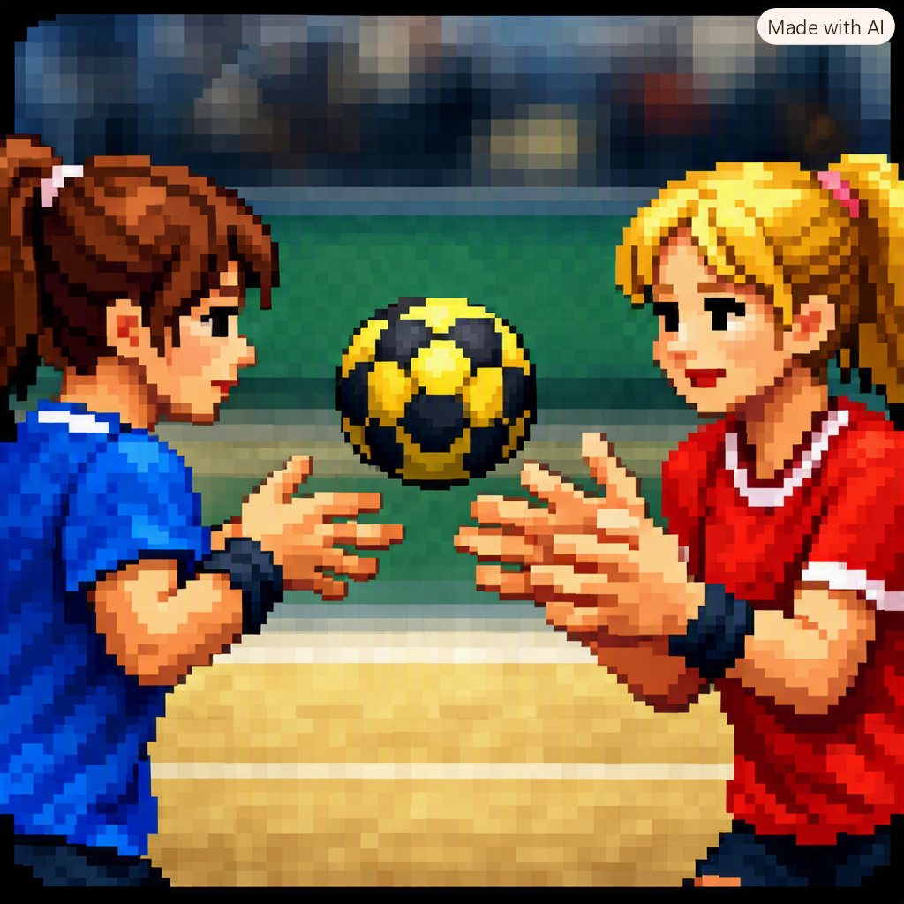
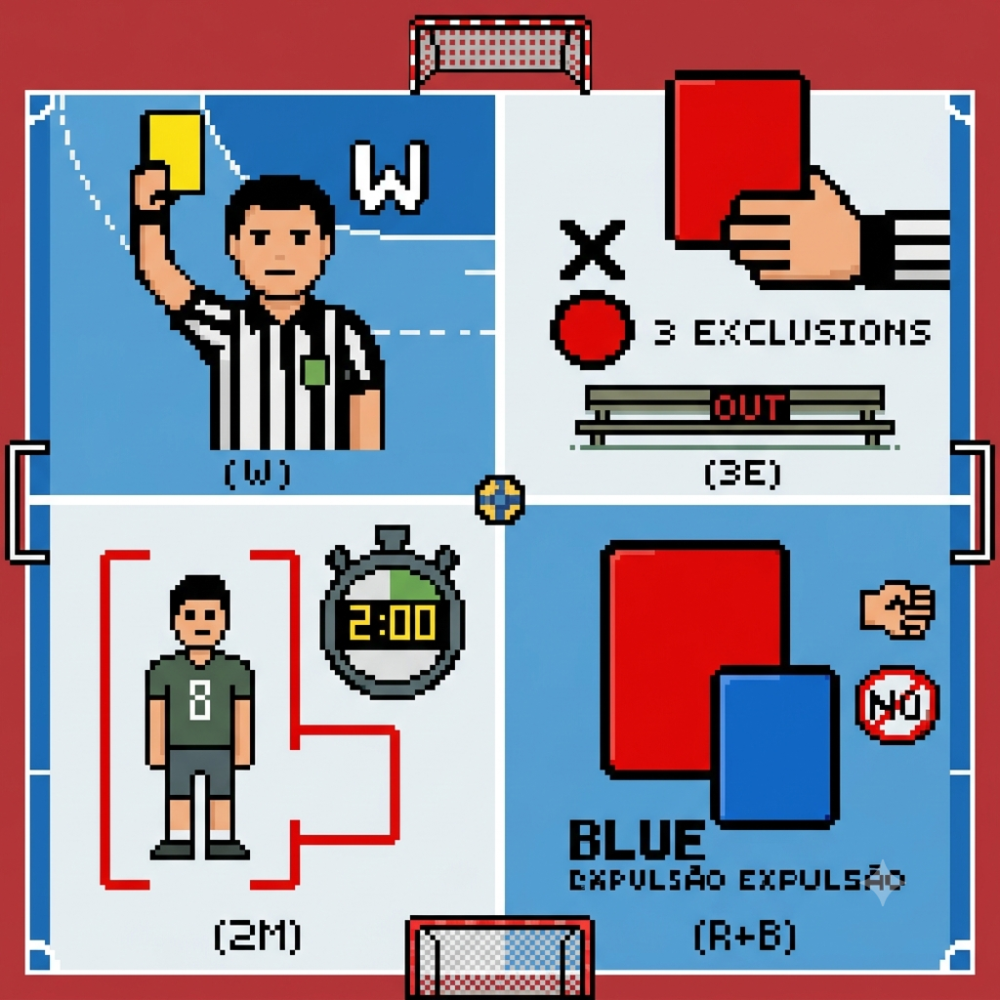
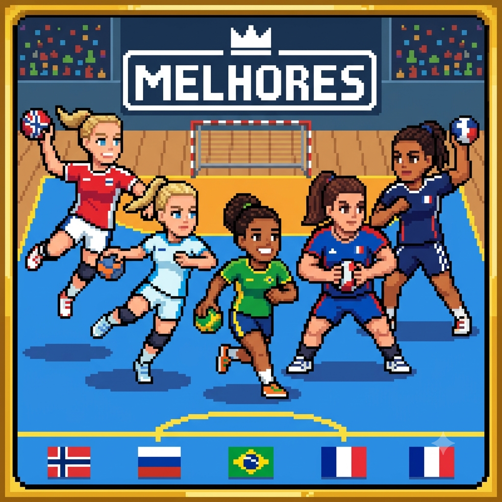

Seja muito bem-vindo ao meu blog!
Se você é apaixonado por esportes, quer aprender algo novo ou deseja se aprofundar no esporte,
este é o seu lugar definitivo. Por aqui, nós vamos falar sobre a história do handebol, as posições
dos jogadores em quadra, os principais tipos de passes, as regras fundamentais e o sistema de punições,
além de conhecer em detalhes as 5 melhores atletas do handebol mundial na atualidade. Prepare-se para dominar
cada detalhe da modalidade, explore todos os posts e venha acompanhar essa jornada com a gente!

Posiçãoes do Handebol
Por: Maria Vitoria
Onde eu posso jogar
Goleiro (GL) É o último defensor e o primeiro organizador do ataque. Além de evitar os gols,
precisa ter reflexos rápidos e uma boa visão de jogo para iniciar contra-ataques precisos.
Ponta Esquerda (PE) e Ponta Direita (PD) Jogam bem abertos nas extremidades da quadra, rente às linhas de lateral.
São atletas muito velozes e ágeis, responsáveis por puxar contra-ataques e arremessar sem quase nenhum ângulo em direção ao gol.
Armador Esquerdo (LE) e Armador Direito (LD) Atuam ao lado do armador central. Costumam ser jogadores altos,
com arremessos de longa distância muito fortes e capacidade de saltar sobre a defesa (arremesso em suspensão).
Armador Central (AM) É o "cérebro" do time. Fica no meio da quadra organizando as jogadas,
distribuindo a bola, ditando o ritmo da partida e criando espaços para os companheiros.
Pivô (PV) Joga infiltrado no meio da defesa adversária, de costas para o gol. Sua função principal é bloquear os
defensores para abrir espaço para os armadores ou receber a bola de costas, girar e arremessar direto para o gol.

Tudo o que Você Precisa Saber Sobre Handebol e Seus Passes
Por: Maria Vitoria
O handebol é um esporte dinâmico onde o objetivo é marcar gols usando apenas as mãos.
Cada equipe joga com 7 atletas em quadra (6 de linha e 1 goleiro).
As regras de manejo da bola são bem claras: o jogador pode dar no máximo 3 passos com a
bola na mão e segurá-la por até 3 segundos sem quicar, passar ou arremessar. Além disso,
a área do goleiro é restrita — nenhum jogador de linha pode pisar nela, exceto se saltar
de fora para dentro e soltar a bola antes de tocar o chão. Passe de Ombro: O mais comum e forte, lançado por cima do ombro.
Passe Quicado: Toca o chão primeiro para passar por baixo da defesa.
Passe de Pronação: Feito para o lado ou para trás virando o pulso rápido.
Passe em Suspensão: Feito no ar durante um salto para fugir do bloqueio.
O handebol moderno nasceu na Alemanha em 1919, criado pelo professor de educação física Karl Schelenz.
No início, ele era jogado ao ar livre, em campos de grama parecidos com os de futebol e com 11 jogadores de cada lado.
Com o inverno rigoroso na Europa, o jogo acabou migrando para os ginásios cobertos e se adaptou para quadras menores, reduzindo a equipe para 7 atletas.
A modalidade até estreou nos Jogos Olímpicos de Berlim em 1936 no gramado, mas se consolidou de vez no salão a partir das Olimpíadas de Munique, em 1972.
Esse esporte também guarda algumas curiosidades bem marcantes.
Os atletas profissionais usam uma resina especial nas mãos,
a famosa cola, para garantir que a bola grude perfeitamente,
o que permite dar efeitos incríveis e fazer arremessos que passam dos 130 km/h. Para deixar o jogo ainda mais tático,
as regras permitem substituir o goleiro por um jogador de linha a qualquer momento, criando uma vantagem numérica no ataque.
E no cenário nacional, o maior momento do esporte aconteceu em 2013, quando a Seleção Brasileira Feminina fez história e conquistou o título de campeã mundial.

Faltas e Punições
Por: Vitoria
No handebol, o contato físico é permitido, mas precisa ser controlado para garantir a integridade dos atletas.
As faltas acontecem quando um jogador empurra, agarra, atinge ou usa força excessiva contra o adversário.
Para manter a disciplina em quadra, os árbitros utilizam um sistema de punições progressivas. A primeira infração leve costuma
render uma advertência com o cartão amarelo, que serve como um aviso inicial para o atleta e para a equipe. Se a falta for
mais agressiva ou se o jogador persistir nas infrações, o juiz aplica a exclusão por 2 minutos. Nessa punição,
o atleta precisa sair de quadra e o time é obrigado a jogar com um jogador a menos durante todo esse tempo. Caso o mesmo atleta
receba três exclusões de 2 minutos na mesma partida, ele é automaticamente desqualificado com o cartão vermelho.
Esse cartão também pode ser mostrado diretamente em lances de falta grave que coloquem o adversário em risco.
Nesses casos, o jogador expulso não pode mais voltar ao jogo, mas a equipe pode recompor o time com outro atleta assim que os dois minutos
de punição terminarem. Por fim, existe o cartão azul, que é exibido junto com o vermelho em situações extremas de agressão física ou verbal,
indicando que o lance será julgado por um comitê disciplinar após a partida.

As 5 Melhores Jogadoras do Handebol Mundial
Por: Vitoria
Henny Reistad (Noruega): Eleita a melhor jogadora do mundo pela IHF, destaca-se pela força física,
impulsão impressionante e grande poder de finalização. Anna Vyakhireva (Rússia): Conhecida como uma das atletas mais geniais do esporte,
possui uma visão de jogo diferenciada e habilidade imprevisível no um contra um. Bruna de Paula (Brasil): Uma das maiores estrelas do
handebol brasileiro e europeu, brilha na elite mundial com sua velocidade, agilidade e arremessos precisos. Pauletta Foppa (França): Referência
absoluta na posição de pivô, domina a área tanto na defesa quanto no ataque com uma eficiência incrível. Sarah Bouktit (França): Jovem talento
que se consolidou entre as melhores do mundo, destacando-se por sua capacidade de marcar gols e presença física dominante no pivô.